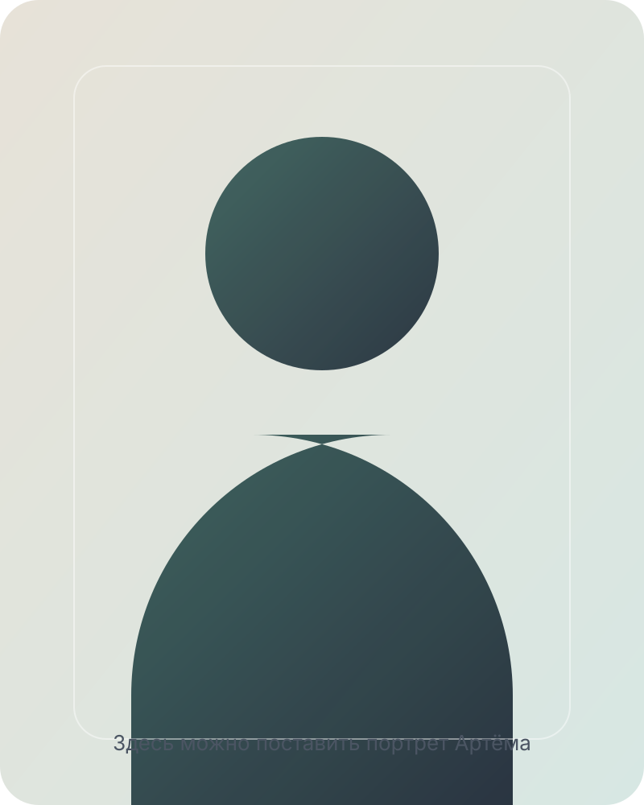
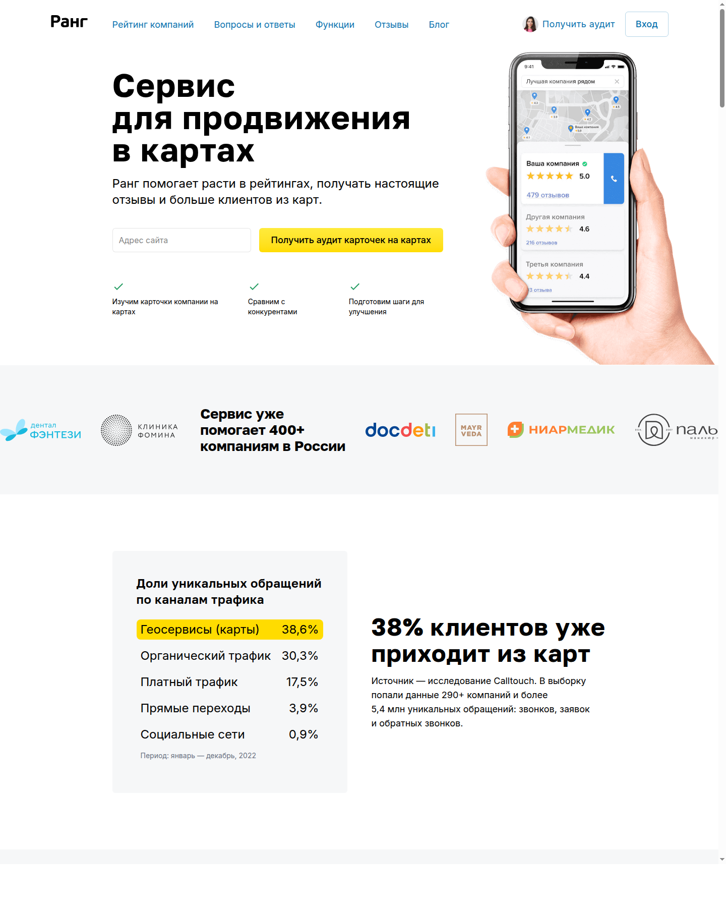

Кто я
- Основатель сервиса для гео-продвижения клиник Rang.ai.
- Сооснователь сети Лёгкая стоматология.
- Работаю на стыке маркетинга, разработки, аналитики и операционных процессов.
- Люблю системы, которые можно измерить, улучшить и масштабировать.
Артём Бандин • Код. Маркетинг. Медицина.
Предприниматель, CMO и техлид в медицине. Делаю инженерный маркетинг: метрики, процессы, отзывы, SEO, AI и автоматизацию на опыте Rang.ai и Лёгкой стоматологии.

Слот под фото готов. Если появится исходник, достаточно заменить файл assets/profile-photo.svg или положить JPG с тем же именем в разметке.
Сервис для продвижения бизнеса в картах. Фокус на рейтингах, отзывах, локальном спросе и понятной аналитике.

Сеть клиник в Москве. Маркетинг, BI, запись, клиентский путь, отзывы, операционные улучшения и культура изменений.
Из опубликованных заметок: 5 клиник, около 100 человек команды, внедрение инженерных практик в офлайн-бизнес.
OpenClaw, автоматические summary, напоминания, сборка данных к встречам, GitHub-дайджесты, счёта, рабочие навыки для ассистента.
Короткий тезис о том, что сила LLM не в генерации текста, а в удержании рабочего контекста там, где человеку уже тесно.
Личный рабочий подход: один markdown-файл вместо сложных статусов, с фокусом на ясность, артефакты и ежедневный ритм.
История про то, как айтишные практики адаптируются к офлайн-команде и почему маленькие изменения важнее разовых подвигов.
Небольшой, но показательный кейс автоматизации: связка 1С, Telegram и процессов онбординга внутри команды.
Если позже появятся GitHub, email, домен или ссылки на канал, их удобно добавить прямо в этот блок.